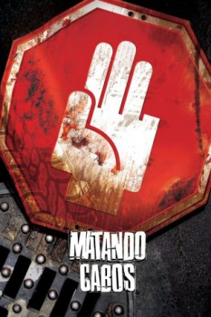

Matando Cabos (2004)

A killer mob comedy.

País:México, 98 minutos.
Idiomas:Español
GénerosComedia, Acción, Policial
Director/es:Alejandro Lozano
Guionistas:Kristoff Raczynski, Tony Dalton
Códec de vídeo:Unknown
Número: 1874
TomatoMeter:

--

--
Clasificación IMDb:


7.4/10 (6K votos)
Certificación:
Argumento:
Two young men get involved with some criminals while trying to free the tycoon they kidnapped.
Reparto
Tony Dalton (Como Javier), Ana Claudia Talancón (Como Paulina Cabos), Pedro Armendáriz Jr. (Como Oscar Cabos), Kristoff Raczynski (Como Mudo), Raúl Méndez (Como Botcha)
Medio: Archivo de video,
Localización: D:\PELICULAS\SAGAS\Matando Cabos(1.2)\Matando Cabos [2004] [1080p] [9,78 Gb]\Matando Cabos [2004] [1080p].mp4
Prestado: No
Rel. aspecto: Unknown